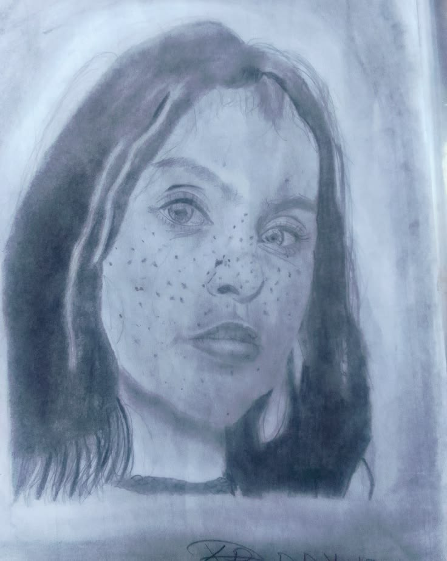
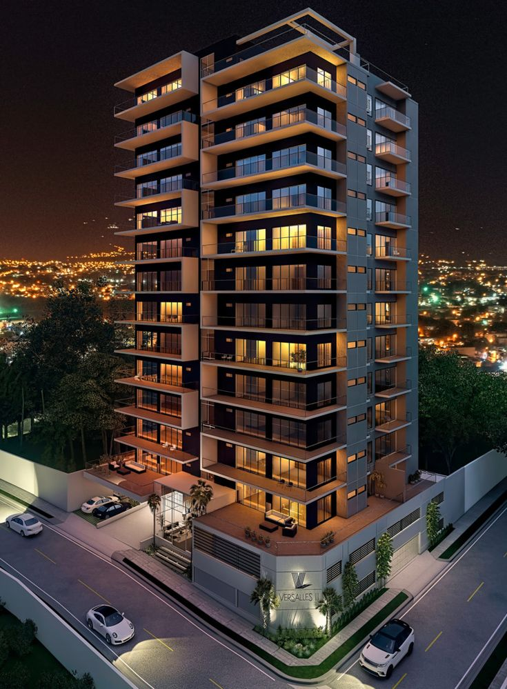
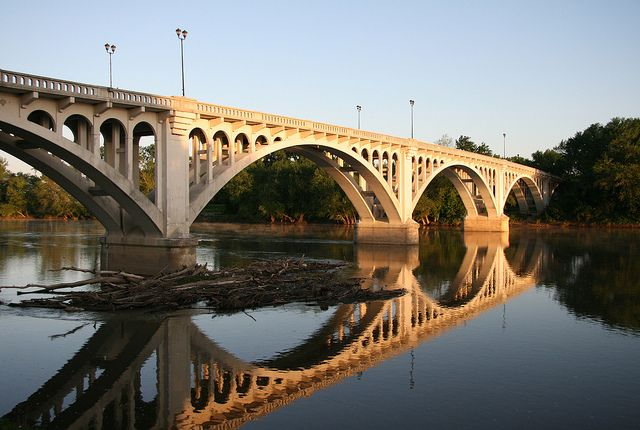
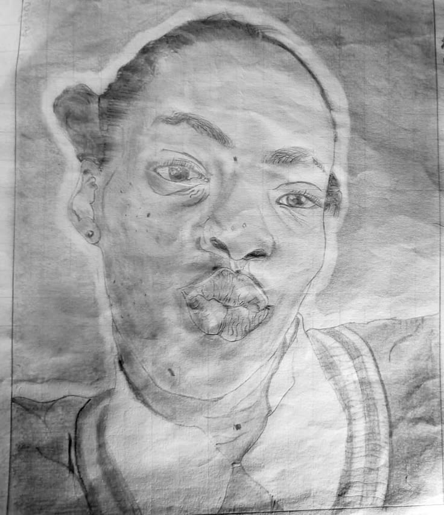
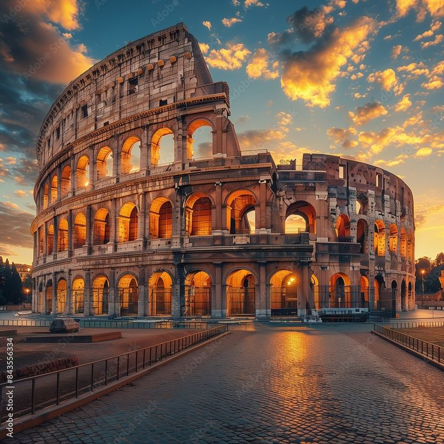
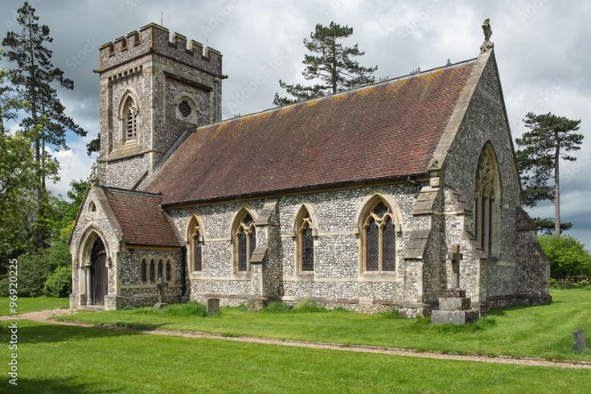

Echoes of the mountain lake.
Lake and mountain
Landscapes

A study in texture: freckles left in rather than smoothed out.
Freckles
Portraits

Vertical city, drawn for the weight of it.
City structure
Architecture
Sunrise at Table Mountain, South Africa.
Table Mountain
Landscapes
A charcoal portrait in soft, low-contrast shading.
Charcoal portrait
Portraits

Where the engineering becomes the composition.
Lake bridge
Architecture
Torii gate at dusk, Mount Fuji behind it.
Mount Fuji
Landscapes

A studio portrait, lit from one side.
Portrait study
Portraits

The Colosseum, in the warmth of low sun.
Colosseum, Rome
Architecture
The Great Wall, following the ridge line.
The Great Wall
Landscapes
Graphite, with the highlight left as bare paper.
Graphite portrait
Portraits

Stone, symmetry, and a very long shadow.
Ancient church
Architecture